Sa mạc chiếm 20% bề mặt trái đất. Đó là một vùng khô khan cằn cỗi, không phù hợp với cuộc sống bình thường của chúng ta do quá khan hiếm nước. Trong sa mạc, nhiệt độ biến động rất lớn, có nơi lên đến 58°C như ở sa mạc Mexico, có nơi lại lạnh đến – 45°C như ở sa mạc Gobi thuộc Châu Á. Ở vùng sa mạc Sinai, nhiệt độ chênh lệch giữa ngày và đêm có thể đến 39°C.
Rất ít loại động thực vật có thể thích nghi với môi trường khắc nghiệt nầy, nơi mà hàng năm, lượng mưa rơi xuống chỉ từ 0 đến 25cm. Sa mạc có thể chia làm 3 loại:
1. Sa mạc núi
2. Sa mạc cao nguyên đá
3. Sa mạc cát hay cồn cát
SINH TỒN TRONG SA MẠC
CON NGƯỜI VÀ SA MẠC
Để có thể thích nghi và tồn tại lâu dài ở sa mạc, chúng ta cần phải biết phải làm những gì và cần phải có những trang thiết bị hay dụng cụ nào? Nên nhớ rằng, các bộ lạc sa mạc và nền văn hoá của họ từng tồn tại rất lâu trong những tình huống khó khăn và khắc nghiệt nhất là nhờ họ đã thích nghi được với môi trường nầy.
Sa mạc dễ dàng làm cho chúng ta choáng ngộp đưa đến suy kiệt thể chất và tinh thần. Nếu các bạn không biết tự rèn luyện cơ thể và có một ý chí phấn đấu cao, không biết cách sinh hoạt trong sa mạc (với những chi tiết nhỏ nhặt) thì khó lòng mà tồn tại trong sa mạc.
Nếu không ở trong tình trạng khẩn cấp, cần phải di chuyển ngay, thì các bạn cần tạo cho mình một chỗ trú ẩn có tiện nghi càng nhiều càng tốt. Đừng hoạt động nhiều trong 2 tuần đầu để cho cơ thể của chúng ta thích ứng dần với cái nóng của sa mạc. Thời gian đầu, những công việc nặng nhọc, các bạn nên làm vào những lúc trời mát mẻ, sau đó tăng dần thời gian. Tuy nhiên, công việc và sự nghỉ ngơi phải xen lẫn nhau.
Trong sa mạc, chỗ trú ẩn hay nơi tạm nghỉ thì thiếu thốn vì cây cối rất ít hoặc không có, điều nầy có thể gây ra hội chứng sa mạc: sự sợ hãi khoảng không. Nhưng các bạn cũng đừng quá lo lắng, hội chứng nầy sẽ biến mất khi các bạn đã quen dần với cuộc sống nơi đây.
LÀM QUEN VỚI KHÍ HẬU
Để có thế sống sót khi lạc vào sa mạc, trước tiên các bạn phải tập làm quen dần dần với khí hậu trong sa mạc. Những ngày đầu, các bạn không nên hoạt động hay chỉ hoạt động trong một thời gian rất ngắn, vào lúc sáng sớm hay chiều tối, sau đó tăng dần giờ hoạt động lên, thời gian còn lại phải kiếm chỗ trú ẩn.
Trong bảng kế hoạch làm quen với khí hậu sa mạc của quân đội Hoa Kỳ sau đây sẽ cho chúng ta thấy số giờ làm việc trong các ngày đầu, để có thể (trong một thời gian ngắn nhất) nhanh chóng thích ứng được với khí hậu sa mạc.
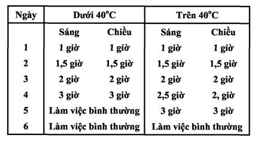
TIA NẮNG, SỨC NÓNG, GIÓ VÀ CÁT
Trong sa mạc, cơ thể của chúng ta chịu ảnh hưởng trực tiếp từ 4 nguồn sức nóng sau:
A- Trực tiếp từ mặt trời
B- Gió mang cát nóng
C- Đá toả nhiệt
D- Sức nóng phản hồi từ mặt đất.
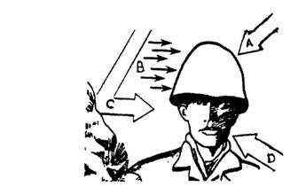
• Tia nắng của mặt trời dù trực tiếp hay phản chiếu đều có thể gây mỏi mắt, và tổn thương thị giác.
• Những chỗ da không được che chở đủ, sẽ bị phỏng nắng. Vì vậy không nên phơi nắng quá 5 phút trong những ngày đầu. Ngay cả những ngày u ám thì cũng nguy hiểm như những ngày nắng.
• Gió và cát sa mạc có thể làm bỏng rát, da và môi sẽ bị nứt nẻ nếu không được bảo vệ. Mắt các bạn có thể bị rát và viêm kết mạc do những hạt bụi li ti bay vào. Nếu có thể, các bạn nên dùng thuốc bôi da và môi, đeo kính bảo vệ mắt, khi phải phô mình ra dưới những điều kiện thời tiết khắc nghiệt nầy.
• Bão cát là chuyện thường xuyên xảy ra trong sa mạc. Những cơn gió cực mạnh thổi bắn tung những hạt cát lên gây đau rát khi chạm vào những nơi da không được che chở. Khi có bão cát, các bạn không được rời khỏi nhóm hay nơi trú ẩn mà không có một sợi dây (nối mình với nhóm hay nơi trú ẩn) để giữ liên lạc. Phải mặc áo quần đầy đủ, che miệng mũi và bảo vệ mắt.
• Trong sa mạc cũng có những cơn lốc được hình thành do các luồng không khí đối lưu trên mặt đất. Cát và những mãnh vụn sẽ bị thổi bay lên trong không khí có thể cao hàng chục mét. Nhưng thường thì hiện tượng nầy chỉ kéo dài trong vài phút.
TRANG PHỤC TRONG SA MẠC
Y phục:
Mục đích chính yếu của quần áo trong sa mạc là che chở cơ thể, tránh tia nắng mặt trời, sức nóng, côn trùng, bò sát và điều tiết sự ra mồ hôi... Các bạn hãy học cách ăn mặc của các cư dân trong sa mạc như sau:
- Che toàn bộ cơ thể
- Mặc nhiều lớp quần áo nhẹ, mỏng, màu nhạt, làm bằng các nguyên liệu tự nhiên thoáng nhẹ như cotton... và nên nới lỏng cho vừa vặn.
- Dùng một khăn quàng bằng len to bản quấn lỏng quanh cổ để che nắng và ngăn không cho gió thổi cát vào trong cổ áo. Khăn nầy còn dùng để che mặt khi có bão cát và giữ ấm cổ trong những đêm lạnh giá.
Các bạn nên giặt quần áo khi có điều kiện, nếu không, hãy phơi ra ngoài nắng để diệt khuẩn và nấm.
Giầy dép:
Là vật dụng rất quan trọng trong sa mạc, nó che chở cho bàn chân cảu chúng ta không bị phỏng dộp vì tia nắng và sức nóng của mặt đất. Giầy cao cổ còn giúp chúng ta tránh được rắn, bò cạp và một số côn trùng, bò sát... cắn đốt.
Sử dụng giầy dép trong sa mạc, các bạn nên lưu ý những điểm sau:
- Nên dùng giầy cao cổ, nếu không có thì hãy quấn thêm mảnh vải làm xà cạp để ngăn cát vào giầy và giảm sức nóng tỏa ra từ cát.
- Nên dùng vớ dầy để giảm sức nóng.
- Nên buộc dây giầy thật kỹ để tránh cát vào trong giầy.
- Trước khi mang giầy trở lại, luôn luôn kiểm tra xem có côn trùng hay rắn rết gì ở trong không.
- Nếu không có giầy dép, các bạn nên tự tạo cho mình những đôi giầy dép bằng những vật liệu có sẵn. Bên đây là những mẫu vớ và giầy dép tự tạo cấp thời.
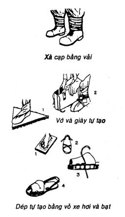
Nón, Mũ:
Để bảo vệ đầu, mắt và khuôn mặt dưới cái nắng và nóng ở sa mạc, chúgn ta cần có một cái nón thích hợp. Chiếc nón cối (kiểu của thực dân) là có vẻ thích hợp hơn cả, bởi chúng nhẹ và có vành để che chở mặt và cổ, nó còn có một khoảng trống ở giữa đầu và nó giúp không khí thông thoáng. Nón được làm bằng các chất liệu xốp, nhẹ, ngăn cản được sức nóng.
Chúng ta cũng có thể dùng kiểu nón của quân đội viễn chinh Pháp với lớp bảo vệ cổ. Hoặc dùng khăn trùm đầu dưới một mũ lưỡi trai hay dùng áo thun chữ T chế tạo thành khăn trùm đầu.
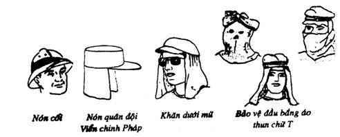
Kính bảo vệ
Để bảo vệ mắt dưới ánh nắng và sự phản chiếu chói chang của sa mạc cũng như không để cho cát vào mắt làm trầy xướt chúng, nếu không có kính râm, các bạn có thể che mặt bằng một cái “mạng” chế tạo từ áo thun hay vải mỏng.
Các bạn cũng có thể làm một kính bảo vệ mắt có khe hẹp theo kiểu của người Eskimo như hình bên. Khe hẹp nầy giúp các bạn có thể nhìn thấy nhưng lại làm giảm bớt tia phản chiếu cũng như gió cát vào mắt. Kiếng nầy có thể làm từ vỏ cây, giấy dầy, vải dầy, da thuộc, plastic....
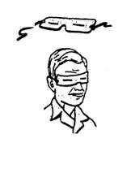
NƯỚC TRONG SA MẠC
Lúc nào các bạn cũng phải nhớ rằng, toàn bộ sự sống trên sa mạc đều tuỳ thuộc vào nước, nó là nhu cầu số một, cho nên các bạn phải biết tìm kiếm, bảo quản và sử dụng làm sao cho có lợi nhất.
Tìm kiếm nước
Trong sa mạc không có sông suối vĩnh cữu, nếu có (như ở sa mạc Colorado) thì cũng do được nuôi dưỡng từ bên ngoài sa mạc. Nước có trong ốc đảo hay ở giếng đào là do từ “tầng ngậm nước”, mà có thể được bắt nguồn từ cách đó hàng trăm dặm và cũng có thể do những cơn mưa cách đây hàng ngàn năm. Nếu tìm ra được những nơi nầy, các bạn là người “trúng số”. Ngoài ra, các bạn còn có thể tìm thấy nước ở những nơi như:
- Những nơi có cỏ hay lau sậy mọc
- Chỗ có đất ẩm ướt
- Chỗ trũng thấp
- Tầng sâu lòng sông cạn khô
- Cạnh các chuồng gia súc bỏ phế
- Khu vực có nhiều dấu chân thú cày xới
Những cây sau đây cũng báo cho chúng ta biết sự hiện diện của nước trong vùng:
- Cây chà là: cho biết có nước ở độ sâu khoảng 1 mét dưới mặt đất.
- Cỏ mặn: cho biết nước có trong vòng 2 mét.
- Cây bông và cây liễu: cho biết nước có trong vòng 3 – 4 mét.
- Cây xương rồng và các cây có dạng tương tự: không liên quan đến vùng có nước, bởi vì bản thân chúng tự giữ nước, hình thái bên ngoài của nó (có khái sâu hay không) cho biết lượng trong cơ thể của nó. Đây là cây mà chúng ta có thể sử dụng trực tiếp. (Xin xem chương NƯỚC)
Bảo quản và sử dụng nước:
- Chúng ta cần ít nhất là 4 -5 lít nước mỗi ngày
- Nước uống phải chứa trong những bình, can... riêng biệt, để không nhầm lẫn. Phải bảo đảm an toàn, không bị rỉ chảy và phải để nơi thoáng mát.
- Trên lộ trình, phải có đủ nước từ điểm lấy nước nầy cho đến địa điểm lấy nước kế tiếp. Nếu sắp hết nước mà không tìm thấy nước ở phía trước, phải quay lại điểm cũ ngay.
- Đi tìm nước ngay trước khi nước dự trữ của các bạn cạn kiệt.
- Các bạn nên uống từng ngụm một và uống nhiều lần trong ngày.
- Để bảo tồn lượng nước trong cơ thể, các bạn không nên đi lại hay làm việc trong khi trời nóng mà chỉ nên hoạt động vào sáng sớm, chiều tối hay những đêm trăng.
CHỖ TRÚ ẨN TRONG SA MẠC
Trong sa mạc, sau nước, chỗ trú ẩn là yếu tố rất quan trọng để có thể tồn tại, nó giúp cho chúng ta tránh những cái nóng như thiêu đốt, những luồng gió hừng hực lửa làm khô kiệt con người, những cơn bão cát tối trời và đau rát như kim châm...
- Nếu bị tai nạn máy bay hay xe bị hỏng máy giữa sa mạc thì nên lưu lại trong thùng xe, hay dưới thân xe, thân cánh máy bay, đây là nơi trú ẩn rất tốt và dễ được các toán cứu hộ tìm thấy.
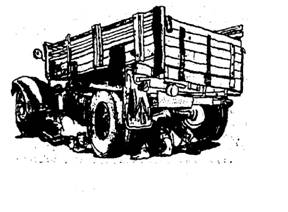
- Nếu có lều bạt thì khá đơn giản để dựng lên một chỗ trú ẩn, che nắng gió.
- Phủ cát lên người cũng giúp cho các bạn tránh được sức nóng và làm giảm sự mất nước qua da.
- Ở những vùng sa mạc cát, các bạn đào một lỗ cạn, dài (hay tìm một lỗ có sẵn). Che phủ lên 2 lớp cách nhau bằng vải bạt, vải dù... hay các vật liệu khác như cây, ván, gỗ... Dàn các mép lại cho kỹ và nếu có thể thì nên phủ thêm một lớp cát.
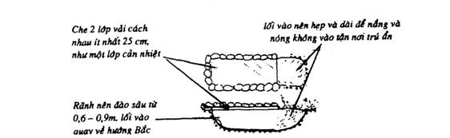
- Ở những vùng sa mạc núi hay sa mạc cao nguyên đá, các bạn chất đá lên thành một khung hình móng ngựa rồi đậy lại bằng vải bạt.
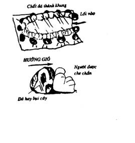
- Sử dụng các thành phần của thiên nhiên sẵn có để núp mát hay tránh gió như: cây cối, bụi rậm, đống đá, hang động, sườn đồi, vách đứng, bờ sông cạn...nhất là khi gặp bão cát.
ĐỘNG VẬT TRONG SA MẠC
Tuy hơi hiếm hoi, nhưng không phải không có. Động vật trong sa mạc đã tự điều chỉnh sinh học để thích nghi với môi trường, chúng trở nên nhỏ bé hơn và thường hoạt động về đêm để tránh cái nắng gay gắt giữa ban ngày. Động vật cũng là nguồn thực phẩm quan trọng trong việc mưu sinh ở sa mạc.
(Xin xem phần SĂN BẮN ĐÁNH BẮT)
Động vật sa mạc gồm một số loài thú, chim, bò sát, côn trùng, động vật không xương sống...
Các loài rắn, bò cạp, nhện... ở sa mạc thường rất độc, các bạn phải rất cẩn thận, nhất là trước khi mang giầy, mặc quần áo, hay đi lại làm việc vào ban đêm.
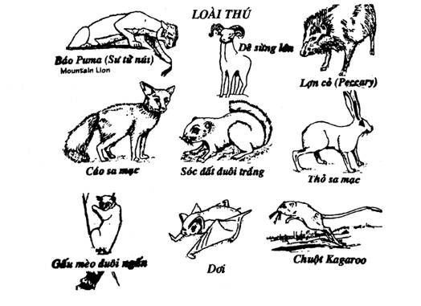
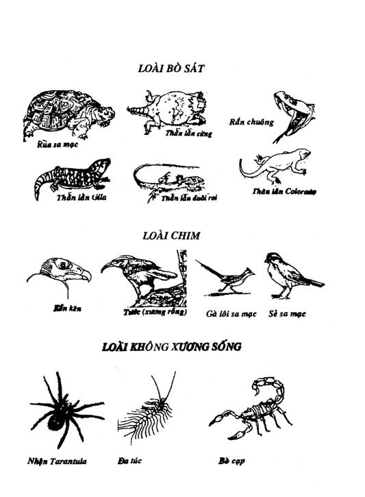
SINH TỒN TRONG SA MẠC
Tóm lại: Để sinh tồn trong sa mạc, các bạn phải nắm chắc những chìa khóa sau đây:
- Nước là nhu cầu số một của sự sinh tồn. Hãy lấy tối đa nước mà các bạn có thể, cho dù phải bỏ lại vài món đồ mà các bạn có.
- Chỉ đi lại vào sáng sớm hay chiều tối. Vào những lúc nóng trong ngày, phải tìm nơi trú ẩn. Tránh đổ nhiều mồ hôi.
- Chỉ di chuyển trong các tình huống sau: 1). Biết chắc sẽ đến nơi có dân cư hay khu vực an toàn. 2). Chắc chắn không ai đến cứu (nhưng cũng phải đi ban đêm).
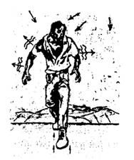
- Cố gắng tìm cho được một con đường thường có người qua lại, một nơi có nước hoặc một khu vực có dân cư.
- Sử dụng con đường nào ít tốn sức nhất. Không đi tắt băng ngang qua các đụn cát, cát lún hoặc địa hình lỗi lõm. Nên đi theo dấu vết đừơng mòn, các chỏm của đụn cát hay vùng thấp giữa những đụn cát.
- Những con suối sa mạc thường dẫn đến những hồ tạm đầy nước muối, các bạn phải cẩn thận, không nên đi theo.
- Đi bộ trong sa mạc, cần chú ý đến những vùng cát trôi và cát lún.
- Khi thiếu thực phẩm, cần săn bắn đánh bắt, cũng chỉ nên làm vào ban đêm, vừa có nhiều thú, vừa ít hao tổn sức lực và đổ nhiều mồ hôi.
- Áo quần phải đầy đủ để có thể che chở cho các bạn tránh được tia nắng trực tiếp của mặt trời, giảm tối đa việc ra mồ hôi ban ngày, và cũng giúp các bạn chịu được cái lạnh khắc nghiệt của ban đêm.
- Nếu không có kiếng mát, hãy tạo một kính có khe hẹp để bảo vệ đôi mắt của các bạn.
- Phải chăm sóc kỹ lưỡng đôi chân của các bạn, phải mang giầy khi đi lại trên sa mạc, nhất là vào lúc trời nóng. Nếu không, chân của các bạn sẽ bị phỏng.
- Khi bão cát sắp đến, nếu phải trú ẩn phía khuất gió sau những đụn cát, chúng ta có thể bị mất phương hướng do sa mạc thay đổi hình dạng sau mỗi cơn bão. Do đó, trước khi vào trú ẩn, nên xác định phương hướng bằng cách sắp một hàng đá hoặc một cây gậy, sợi dây hay áo quần...
- Không di chuyển trong bão cát. Nếu không có gì che chắn, hãy che mặt lại, đưa lưng về hướng gió... bão cát sẽ không chôn vùi các bạn.
- Các bản đồ sa mạc thường thiếu chính xác. Các bạn chỉ có thể xác định điểm đứng khi có những điểm chuẩn của địa hình.
- Trong không gian bao la của sa mạc, sự ước lượng về khoảng cách của các bạn thường lớn hơn thật gấp 3 lần.